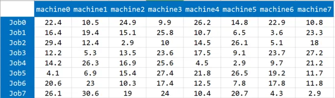
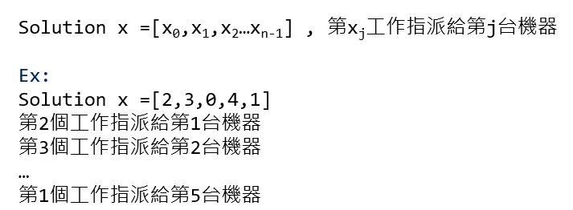
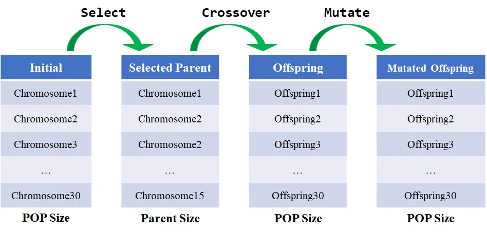
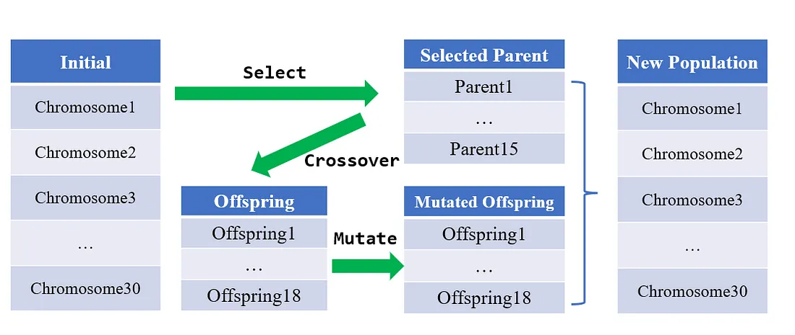
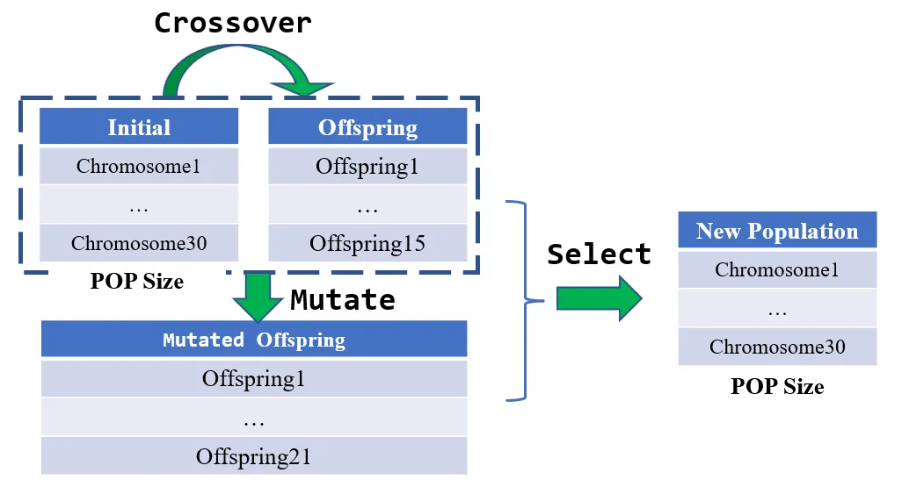
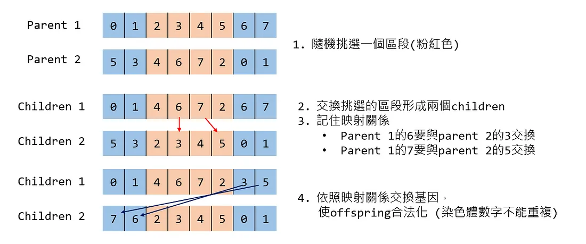
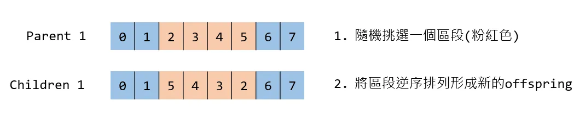
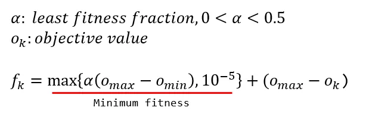
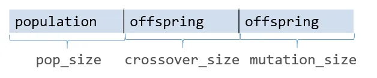
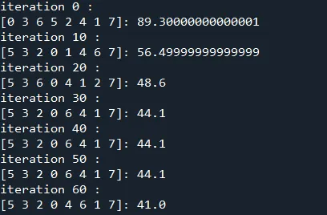

這篇文章會介紹啟發式演算法中的基因演算法，分享如何以 Python 進行實作，並解決工作指派問題。
提醒 本文第一次出現的專有詞彙會以中英雙語同時表述，後文則是盡量以英文為主。會傾向用英文表述是因為中文翻譯大相逕庭，況且中文不是原文，偶爾會出現詞不達意的情形。 對於 Python 基法語法還不熟悉的可以先參考這篇 Python 基本教學，裡面會簡單介紹一些我常使用到的 Python 語法。 以下正文開始~
工作指派問題 (Job Assignment Problem, JAP)
工作指派問題是一種最佳化問題中的組合優化問題。工作指派問題經過大幅簡化描述如下，假設有N件任務要處理，手邊有N個代理人(agent)可以指派，每個代理人必須處理任意一件任務，每個任務也必須被任意一個代理人處理，試問如何指派使得總成本最低。
以這次測試的資料集為例。假設手中有 8 台機器、 8 件工作，每台機器皆可以處理任何工作，考量機型特性等因素，不同機台擅長不同的加工模式，因此造成機器處理不同工作的時間有所差異，要如何分配工作到不同的機台，使得機器加工的總時間最少，即為本次問題的目標。

在程式設計上仍然以物件導向精神封裝成類別，這時可以看得出來 compute_objective_value是共同函數，下次可以試著寫一個 Problem 的父類別，分別由TSP、JAP等類別繼承為子類別，再覆寫這個函式~。
|
|
基因演算法 (Genetic Algorithm, GA)
基因演算法是一種受到自然選擇 (natural selection) 機制所啟發的演算法。自然選擇解釋生物如何適應環境，基於生物中個體的某種優勢或劣勢，導致生存能力存在差異，進而影響繁殖能力，使得特徵逐漸被保存或者淘汰。基因演算法便是在模擬自然選擇的機制，將解比擬成一條染色體 (chromosome)，模仿生物學中交配 (crossover)、突變 (mutation) 等現象，並根據適應度 (fitness) 的高低，決定染色體的去留，達到去蕪存菁的效果。
通俗地說，基因演算法就是在特定大小的解集合中，透過增添亂數、兩兩排列組合等操作來改變/產生新的解，並從中挑選較好的解保留到下個世代中，以確保解變異的方向能夠逐漸收斂。
染色體的編碼方式 (Representation and Encoding)
上述提到基因演算法是將解比擬成一條染色體，常見的編碼方式如下：
二進位 (Binary Representation and Encoding)
二進位是最常見的編碼方式，每條染色體都是由0、1組成。整數、實數的最佳化問題也可以轉換成二進位來處理。
整數 (Integer Representation and Encoding)
染色體是由一連串的整數表達，適合用來表示組合優化問題的解，例如旅行推銷員問題(TSP)，染色體就是由城市的id組成，或是本文要解決的工作指派問題就是使用整數編碼形式，染色體就是每台機器要處理的工作id組成，以下舉例說明。

實數 (Real Representation and Encoding)
直接用實數表達染色體的基因，每個變數應該要有上界及下界，常用來表達連續優化問題的解。可以參考實作粒子群演算法一文。
在蟻群最佳化演算法的實作 一文中有提到，蟻群最佳化演算法擅長處理如旅行推銷員問題等組合優化問題，對於連續優化問題比較力不從心。相形之下，基因演算法能夠勝任的地方便十分廣泛，連續優化問題、組合優化問題都有學者研究出相對應的改良版本，具體運用在多目標優化、設施規劃、排程、存貨控制，還有本次欲解決的工作指派問題等，因此在眾多啟發式演算法中，基因演算法時常是處理最佳化問題的第一選擇。
基因演算法流程
基因演算法有許多版本，筆者會先簡單介紹最經典的原始版本，再來介紹本文採納的演算法版本流程。
經典基因演算法流程

經典的基因演算法流程如圖所示，首先根據設定的母體 (population) 大小初始化，並以輪盤法 (roulette wheel selection) 隨機挑選染色體成為父母 (parent)，適應度 (fitness) 越高的染色體被挑選的機率越大，同一染色體可能被挑選兩次 (如Chromosome2) ，因此字面上是挑選，實際行為更像選擇並複製染色體。parent會隨機兩兩交配 (crossover) 產生後代 (offspring)，offspring再進行突變 (mutation)，mutate後的offspring成為下一個代次新的 population，如此反覆進行，直到達到中止條件。
菁英挑選策略演算法

還有一種非常熱門的版本，就是使用到菁英挑選策略 (Elitism Selection)，最初從 population 中根據適應值大小挑選染色體成為父母 (parent)，parent 會隨機兩兩交配 (crossover) 產生後代(offspring)，offspring 再進行突變 (mutation)，此時挑選中的parent 會與 mutate 後的 offspring 成為下一個代次新的population，因此菁英挑選策略最大優點是可以盡量維持住優秀染色體，不進行任何的突變，但也容易陷入局部最佳解~。
在演算法中的 parent selection、crossover、mutation等流程都有許多的版本可以嘗試，詳請可以參考 Pygad，這個簡單易用的GA套件，已經實作許多的不同的方法！
本文基因演算法流程
本文要實作的又是另一版本，用意在擴大解的空間，以隨機方式從原始的population 挑選 parent 進行 crossover 產生 offspring，並且讓原始的 population 和 offspring 擁有相同的機率進行 mutation 產生新的 offspring，最後在從全部染色體 (原始的population+offspring+Mutated offspring) 中以輪盤法挑選染色體成為下個代次的 population，如下圖所示。

本文實作的演算法大致流程如下：
- 初始化 (initiate)。根據 population 大小進行 population初始化。
- 交配 (crossover)。從 population 隨機抽取幾對染色體作為parent進行crossover產生新的offspring。
- 突變 (mutation)。從 population 隨機抽取幾條染色體進行突變產生新的offspring。
- 計算適應度 (fitness)。計算所有染色體 (population 加上新的offspring)的fitness。
- 更新最佳解。倘若此代次最佳解的 fitness 勝過歷史最佳解(so far the best)，則更新歷史最佳解。
- 挑選 (selection)。根據所有染色體的 fitness以輪盤法進行挑選，成為下個代次的 population。
相信讀者此時對演算法流程有大致的認識，接著讓我們談談細節的部份。
交配 (crossover)
同時擷取兩個染色體的基因，重新排列組合成新的染色體。不同的染色體編碼形式有不同的 crossover 方法。本文採納的染色體是整數編碼方式，採取的是D. Goldberg and R. Lingle等人提出的 Partially matched crossover(PMX)。 PMX 擁有比大多數的 crossover 方法還要優異的表現，致使它成為使用頻率最高的方法。
PMX 的圖解流程在下方，流程大抵就是一對 parent 交換特定區段的基因成為 offspring。在某些情況，整數編碼形式的解是不允許數字重複(例如本文欲解決的工作指派問題，一個工作不能同時給兩個以上的機器處理)，因此要記住交換時的映射關係，如果圖解流程的第3點所示。至於為什麼數字2、4沒有在映射關係內，因為這兩個數字同時存在parent的交換區段(粉紅色)中，這表示在非交換區段(淺藍色)中不會再出現數字2、4，因此自然也不會有映射關係。
注意
這裡的parent 1、parent 2 分別指父母的意思，並非有兩對parent。

在此羅列其他常見的 crossover 方式 (基於整數編碼) 供讀者參閱。
- Order crossover (OX)
- Position-based Crossover
- Order-based Crossover
- Cycle Crossover(CX)
突變 (mutation)
改變原本的染色體基因，增加染色體的多樣性，用意在擴大搜尋解的空間。以二進位編碼為例，就是將某些基因從0變成1，或是從1突變成0。本次採用的突變方式為 Inversion mutation，適用於染色體為二進位或整數編碼形式，是將染色體特定區間的基因逆序排列。例如在區間2-5逆序排列染色體 [0,1,2,3,4,5,6,7] 的結果則是 [0,1,5,4,3,2,6,7] (索引值從0開始)。

在此羅列其他常見的 mutation 方式供讀者參閱：
- Displacement mutation (DM)
- Inversion mutation operator (SIM)
- Scramble mutation (SM)
適應度 (fitness)
評估染色體的生存能力，也就是評估這個解的優劣，用來作為判斷染色體是否能成為下個代次的 population 的重要依據。公式如下：

挑選 (selection)
挑選策略分為 Deterministic 和 Stochastic 兩種，以下分別闡述
- Deterministic。顧名思義就是確定型的選法，完全依照適應度高低進行選取。
- Stochastic。隨機型的選法。依照適應度的高低有不同的機率被選取，一種著名的方法為輪盤法 (roulette wheel selection)，讀者可以參閱 實作蟻群最佳化演算法 一文。
Python 程式碼實現
認識變數
首先，先來認識演算法中重要的幾個變數。
pop_size： population 的數量。chromosomes：所有染色體。數量為 population size 加上offspring size。selected_chromosomes：表示在 selection 階段被挑選作為下個代次的 population 的染色體。事實上這只是在計算上的一個暫時變數，在存取 population 時會以chromosomes[:pop_size]存取populationbest_chromosome：截止目前fitness最高的染色體。number_of_genes：一條染色體的基因數量。也就是這個解的變數個數，以這次的工作指派問題為例就是指機台數量。fitness：染色體適應度。計算公式如上節所示。objective_values：目標值。機台加工總時間。indexs：染色體的索引。在 crossover、mutation 階段，是以隨機方式從 population 抽取作為 parent，因此藉由 shuffle 該變數得到隨機抽取的效果。
初始化(initiate)
chromosomes 初始化時要注意，值必須在 [0,number_of_genes-1] 區間，且絕對不可重複，再次強調，一個工作只能被一台機器處理。為了增加多樣性，會以 np.random.shuffle(self.chromosomes[i]) 打亂原始順序。
|
|
交配 (crossover)
首先使用 self.shuffle_index(self.pop_size) 將 population 長度的索引重新隨機排序。每次 crossover 都會產生兩個 children，因此第一對 parent 產生的 offspring，位置會是 pop_size、pop_size+1，第二對 parent 產生的 offspring，位置會是 pop_size+2、pop_size+3，以此類推。因此這裡也可以注意到一點，crossver_size 一定是偶數，因為每次 crossver 都會產生兩個children。

partial_mapped_crossover 流程在上面章節有介紹，用程式實現其實有難度也不好解釋，因此這裡不具體講解實現過程，讀者可以參閱程式碼揣摩，不懂在寫信詢問。
|
|
突變 (mutation)
這裡一樣先用 self.shuffle_index(self.pop_size) 將 population 長度的索引重新隨機排序。第一對 parent 產生的 offspring，位置會是 pop_size+crossover_size、pop_size+crossover_size+1，第二對 parent 產生的 offspring，位置則是pop_size+crossover_size+2、pop_size+crossover_size+3，以此類推。至於 mutation 採取的是 Inversion 方法，將染色體特定區間的基因逆序排列成為新的 offspring，具體請看 inversion_mutation。
|
|
計算適應度 (fitness)
首先計算 objective_values，由於 crossover 和 mutation 產生offspring 同時，也一併計算 objective_value，因此這裡只要計算population 的即可。然後再計算所有染色體的 fitness。
|
|
更新最佳解
取得本次 iteration 最佳解，如果有大於 best_fitnes 則取代之
|
|
挑選 (selection)
從 population 和 offspring 中挑選下一代的 population。這裡分為Deterministic 和 Stochastic 兩種。Deterministic 就是直接 sort排列，再取前面最高的幾條染色體成為新一代的 population，Stochastic 就是以輪盤法進行選取。
selected_chromosomes 在此派上用場，因為使用輪盤法是針對所有染色體反覆進行隨機抽取，因此便不能直接用 chromosomes 直接賦值，先賦值到 selected_chromosomes，最後在轉移至 chromosomes 變數。
|
|
執行結果
執行結果因模型參數而不同，可以調整的模型參數有 population size、selection type、crossover type 、crossover rate、 mutation type、 mutation rate 等，每次參數的調整都會影響模型的表現，需要透過試誤法來得知最合適的參數。

總結
基因演算法是一種受到自然選擇 (natural selection) 機制所啟發的演算法，透過交配 (crossover)、突變 (mutation) 等操作，根據適應度來挑選適合生存的個體，如此迭代一步一步逼近最佳解。雖然在數學上難以證明該種演算法尋解的能力，但在實務上卻是非常強大的工具，在諸多啟發式演算法中表現十分出色。今天為讀者介紹基因演算法，並且用Python進行實作，希望各位讀者能有所獲益~，文中有任何問題都可以留言告知我，謝囉。
資料集/完整代碼： Github Code